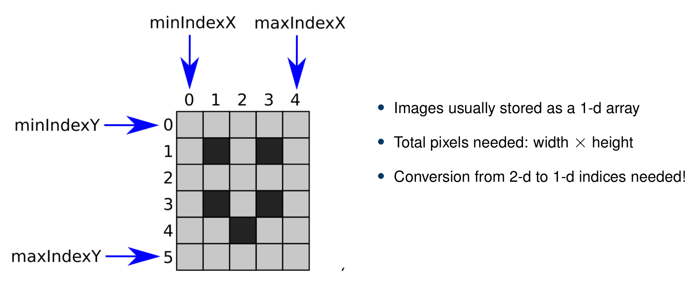
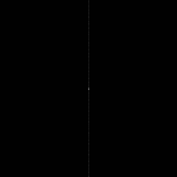

Submission deadline: 23.05.21 23:55h
Please ensure that all files you created also contain your name and your IDM ID and also your partner's name and IDM ID if you're not working alone.
Each exercise has 10 points. You have to achieve 30 of 60 points in six homework exercises to pass the module.
Images and 2D Waves
In this exercise, we finally work with images. It's time to update the file src/main/java/lme/DisplayUtils.java to the newest version.
This should provide you the following methods to work with images:
// Open a file
public static mt.Image openImage(String path)
// Download and open a file from the internet
public static mt.Image openImageFromInternet(String url, String filetype)
// Save an image to a file
public static void saveImage(mt.Image image, String path)
// Show images
public static void showImage(float[] buffer, String title, int width)
public static void showImage(float[] buffer, String title, long width, float[] origin, double spacing, boolean replaceWindowWithSameName)
// Calculate a Fourier transform for an image
public static void FFT(float[] buffer, String title, long width, float[] origin, double spacing)
mt/Image.java
4 Points
The code for this section should go to src/main/java/mt/Image.java
Our goal is to share as much code with our mt.Signal class. So mt.Image will be a subclass of mt.Signal.
// <your name> <your idm>
// <your partner's name> <your partner's idm> (if you submit with a group partner)
package mt;
import lme.DisplayUtils;
public class Image extends Signal {
}
mt.Image has five members (apart from the ones inherited by mt.Signal).
// Dimensions of the image
protected int width;
protected int height;
// Same as Signal.minIndex but for X and Y dimension
protected int minIndexX;
protected int minIndexY;
// For a later exercise (no need to do anything with it in exercise 3)
protected float[] origin = new float[]{ 0, 0 };
And two constructors:
// Create an image with given dimensions
public Image(int width, int height, String name)
// Create an image with given dimensions and also provide the content
public Image(int width, int height, String name, float[] pixels)
As shown in the exercise slides, we will store all the pixels in one array, like we did in Signal.
The array should have the size width * height.
minIndexX,minIndexY should be 0 for normal images.

Call the constructors of the super class Signal in the constructors of Image.
You can call the constructor of a super class by placing super(...) with the respetive arguments in the first line of the constructor of the subclass.
The constructor public Image(int width, int height, String name, float[] pixels) does not need to create its own array (take pixels for buffer).
But you can check whether pixels has the correct size.
Let's also provide some getters!
// Image dimensions
public int width()
public int height()
// Minimum and maximum indices (should work like Signal.minIndex/maxIndex)
public int minIndexX()
public int minIndexY()
public int maxIndexX()
public int maxIndexY()
atIndex and setAtIndex should work like in Signal except that they now have two coordinate indices.
atIndex should return 0.0f if either the x or y index are outside of the image ranges.
public float atIndex(int x, int y)
public void setAtIndex(int x, int y, float value)
//We need a method to set our buffer for the show() function
public void setBuffer(float[] buffer)
Remember how we calculated the indices in the exercise slides. You have to apply that formula in atIndex/setAtIndex.

Add the method show to display the image
public void show() {
DisplayUtils.showImage(buffer, name, width(), origin, /*spacing()*/ 1.0f, /*Replace window with same name*/true);
}
Open the image pacemaker.png in a file src/main/java/exercise/Exercise03:
// <your name> <your idm>
// <your partner's name> <your partner's idm> (if you submit with a group partner)
package exercises;
import mt.Image;
public class Exercise03 {
public static void main(String[] args) {
(new ij.ImageJ()).exitWhenQuitting(true);
Image image = lme.DisplayUtils.openImageFromInternet("https://mt2-erlangen.github.io/pacemaker.png", ".png");
image.show();
}
}
The image is from our open access book.

You can check the correctness of atIndex with the ImageTestin the file src/test/java/ImageTests.java.
2D Waves
4 Points
We implemented a 1D Sin and Cos function in Exercise01. Now we want to build the 2D functions in SineWave2d and CosineWave2d. Create the two files src/main/java/mt/SineWave2d and src/main/java/mt/CosineWave2d. They will be a subclass of mt.Image.
Additionally we are building a class Vector2d, which sets the frequency and orientation of our waves. Create therefore the file src/main/java/mt/Vector2d.
The class has two members k_xand k_y and a simple constructor.
package mt;
public class Vector2d {
float kx,ky;
public Vector2d(float kx, float ky){
...
}
}
To use the vector in the calculation of our Sine and Cosine waves, we need to implement a function dot to form the dot product of two vectors:
$$ a \cdot b = \sum_{i=1}^{n} a_i b_i$$
public float dot(Vector2d other)
The vector and the waves can be visualized like in the lecture:
The setup for the 2D wave functions will be the following:
package mt;
public class SineWave2d extends Image {
}
The min and max indices of the wave functions should be set to $-[\frac{Width}{2}]$, $[\frac{Width}{2}]$ and $-[\frac{Height}{2}]$, $[\frac{Height}{2}]$.
Both classes have a constructor in which you need set the pixel intensity in the buffer with the hep of the vector k:
public CosineWave2d(Vector2d k, int width, int height, String name)
public SineWave2d(Vector2d k, int width, int height, String name)
To get the intensity of each pixel of the 2D Wave Image we can use the following formulas:
$$IntensityCos\left[x,y\right] = \cos\left((\frac{x}{Width}\cdot k_x+\frac{y}{Height}\cdot k_y) \cdot 2\pi\right) $$
$$IntensitySin\left[x,y\right] = \sin\left((\frac{x}{Width}\cdot k_x+\frac{y}{Height}\cdot k_y) \cdot 2\pi\right) $$
Adding up waves and looking at the Fourier Transform
2 Points
To add up multiple signals we implement a similar methods like in Exercise 1.
public Image add(Image image)
The method add should add up two images element wise. Return the addition with a new image. Be careful with the min and max indices of the images. Check if the images differ in size and throw an exception otherwise.
Can you create an Image with checkerboard like patterns, by adding up multiple waves?
Additionally we want to look at the Fourier transformation of our waves. As you saw in the lecture, the Fourier transform analysis the frequency spectrum of our signal.
Add the function fft to the mt.image class, which calls a function from DisplayUtils.java:
public void fft(){
DisplayUtils.FFT(buffer, name, width(), origin, /*spacing()*/ 1.0f);
}
The function can be called just like the show()function. Be careful with the image size. The FFT of imageJ works best for our signals with image sizes of $2^n$ ($64x64$,$256x256$,....).
Can you tell to which wave functions these frequency spectrum belong?
|  |  |
How does the Fourier transform of our first picture pacemaker.png look like?
In the end you can use the Demo below to test some behavior of 2D Sine and Cosine Waves with different and multiple $k_x , k_y$ parameters.
Submitting
Please ensure that all files you created also contain your name and your IDM ID and also your partner's name and IDM ID if you're not working alone. You only need to submit the code. No need to submit answers to the questions in the text.
Then, compress your source code folder src to a zip archive (src.zip) and submit it via StudOn!